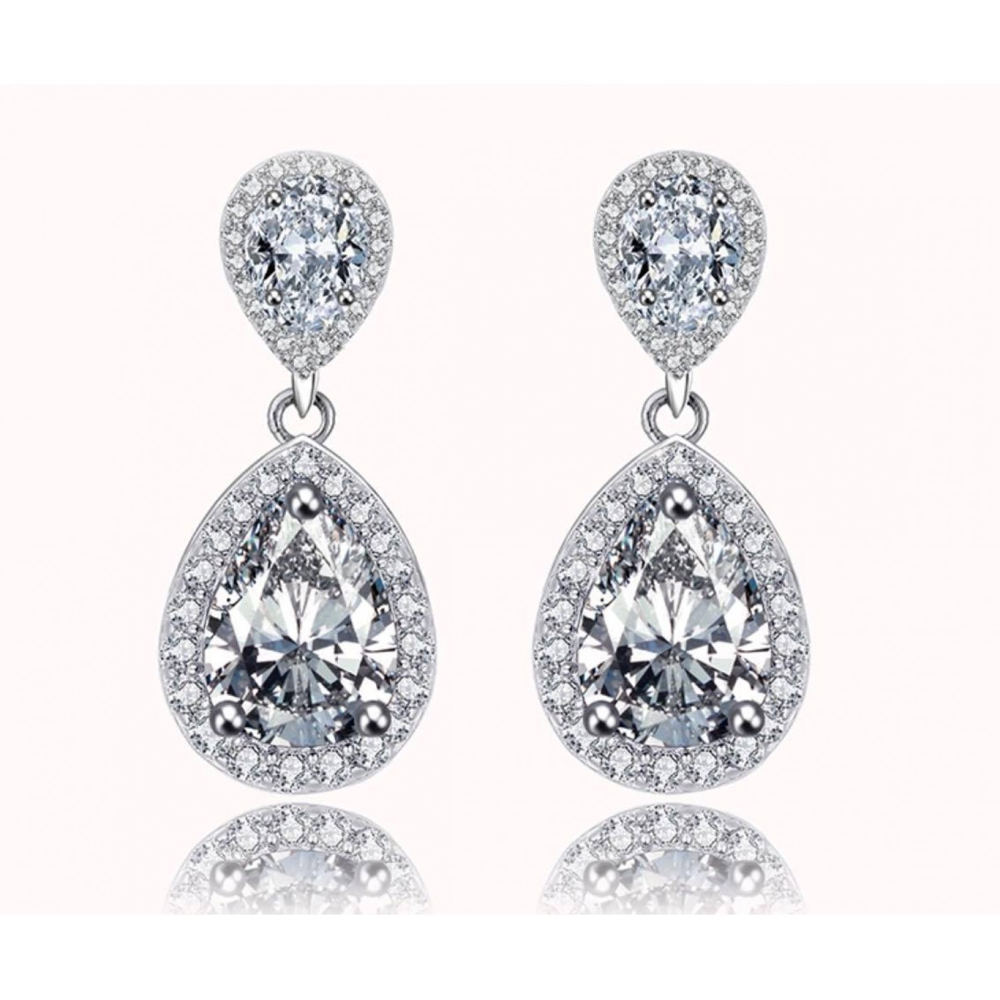

Shopping for fine jewellery is such an exciting experience; a chance to ask questions, compare beautiful designs and ultimately take home the piece that has stolen your heart.
Many shoppers will begin their search for jewellery online,
but visiting a jewellery store or jewellery exhibition
is a must - it’s a chance to see designs up close and
talk with an expert about jewellery. Before you enter a shop,
ask yourself ‘What do I want?’ and think about the themes and
inspirations you like in jewellery. But also prepare to be open
minded and explore various styles of jewellery -
you might fall in love with something very different!
If you are browsing in a jewellery boutique and see a design
you like, begin by asking some questions about it. One of
the first should be ‘What is it made from?’, to gauge whether
the piece is gold, platinum or another type of metal. In Europe,
18ct yellow, white and rose gold is often used to make fine
jewellery and platinum is chosen for bridal or diamond jewellery
as it’s very hardwearing.
If the piece you are looking at contains gemstones or diamonds,
find out what they are. If they are blue stones they could be sapphire,
topaz, aquamarine or even iolite; pink stones could be tourmaline,
sapphire or kunzite. There are many types of gemstones, and they will
each change the value and wearability of the piece. Diamonds also come
in many variations, and a good jewellery shop will explain the quality
and grade of the diamonds you are looking at, and can show you a chart
to outline how diamonds are graded.
Next up, try the piece on. The jewellery shop’s team should be happy for you
to try on the jewellery, which is especially important if it is a necklace,
bracelet or earrings, so you can gauge how it sits, the length and whether
the style suits you. Ask for their advice and to compare it with other pieces
so you can judge for yourself. If it is a ring or bracelet and feels too big,
ask the shop about re-sizing. They should be able to make small adjustments
easily to ensure it is the perfect fit.
More and more customers buying fine jewellery like to know where
the piece was made - whether locally or by goldsmiths in another studio.
It is always good to ask this question to better understand whether
the piece has been made by hand and is unique or is part of a larger collection.
In some jewellery stores you can even meet the goldsmiths,
which is a great opportunity to ask about their inspirations!
An example of link style
Hallmarks are the little letters and symbols often present on fine jewellery that denote what it is made from (the precious metal) and who by (which jewellery store or designer). In some countries they are needed by law, and show the customer that they are buying real gold, silver or platinum. At AENEA, our jewellery will often feature hallmarks to symbolise the precious metal, along with our ‘makers stamp’, which we are happy to show to our customers.
A trustworthy and caring jewellery shop will be able to provide a valuation for the piece of jewellery you have purchased, so you can have it insured and wear it without concern. Jewellery made in gold or platinum should always come with a valuation, while large diamond designs may also have independent certificates that detail the grade and quality of the diamond, which can also be used for valuations. Ask your jeweller for GIA, Gem-A or IGI certificates if you are buying a diamond, as these companies are some of the world’s most well-respected for diamond grading companies.
Another question to ask is how to care for your jewellery. As explained before by AENEA, pearls - for example - can be affected by perfumes and moisturisers, while other gemstones are hardwearing and can be worn every day. It is always good to seek advice on how to gently clean your jewellery at home, and how to store it. All good jewellery shops will wrap your jewellery in a beautiful box, and the box should be kept to store your fine jewellery and avoid it getting tangled up or scratched by other pieces in your jewellery box.
When you are purchasing fine jewellery, ask the assistants at the shop about ‘after care’ for the piece. Do they offer a guarantee with the design, or could you return in a year and have the piece cleaned and checked professionally by the shop? If the piece is something you want to wear everyday, like a necklace or ring, such after care will ensure your jewellery is being professionally checked over and the stones and clasps are secure so you can keep wearing it, worry free.
Here, each piece of fine jewellery is unique, thanks to the gemstones and diamonds we use, and the careful stages of making each vibrant design. However, matching designs can be made to complement the beauty of the piece a customer has bought. If you wish to have a matching design made, ask your jeweller if they offer a bespoke service, like Our Atelier, where you can talk you through designs, sketch ideas and choose your own gemstones and diamonds to have something made just for you.
Image to use:
Canvas to fill: